/* Моя кошка замечательно разбирается в программировании. Стоит мне объяснить проблему ей - и все становится ясно. */
John Robbins, Debugging Applications, Microsoft Press, 2000

/* Моя кошка замечательно разбирается в программировании. Стоит мне объяснить проблему ей - и все становится ясно. */
John Robbins, Debugging Applications, Microsoft Press, 2000
CheckBoxPreference
EditTextPreference
ListPreference
SwitchPreference
RingtonePreference
PreferenceCategory
PreferenceScreen
Импорт системных настроек
Настройки с зависимостями
Отслеживание изменений в Общих настройках
Настройки могут быть скрытыми или открытыми. Например, мы можем подсчитывать, сколько раз пользователь запускал нашу программу и при сотом запуске подарить ему бонус. Счётчик запуска приложения мы храним в файле настроек, но пользователь ничего не знает об этом. Но бывает так, что нам необходимо дать пользователю настроить функциональность приложения под свои вкусы. Например, сделать настройку "Напоминать о дне рождения котика". Если пользователь установит флажок у этой настройки (пусть только попробует не установить), то программа напомнит ему в нужный день о необходимости купить тортик.
Часто для этих целей в приложениях используют отдельный экран с настройками. Безусловно вы можете создать собственный xml-файл разметки и разместить там нужные элементы управления. Но Android для этих целей предоставляет собственный Preferences Framework, с помощью которого можно создавать индивидуальный набор предпочтений и встраивать их в приложения. Главное преимущество использования фреймворка состоит в том, что экран настроек выглядит стандартно во всех приложениях и позволяет пользователю быстрее разобраться в работе.
Кроме того фреймворк настроек позволяет прослушивать изменения в Общих настройках через реализацию метода onSharedPreferenceChangeListener().
Использование фреймворка позволяет быстро создать окно настроек практически без написания кода. Предпочтения — это отдельная активность в приложении, вызываемая из активности. Сама активность расширяется от класса PreferenceActivity, а не от стандартного класса Activity. Предпочтения определяются в отдельном XML-файле, где корневым элементом является элемент <PreferenceScreen>, который представляет собой контейнер для предпочтений и может содержать дочерние элементы <PreferenceScreen>. Элемент <PreferenceCategory> также является контейнерным элементом и предназначен для объединения предпочтений в группы.
Сама настройка внешнего вида разметки создаётся не в папке res/layout, а в папке res/xml. Если такой папки нет, то создайте её самостоятельно. Для начала необходимо создать в папке res/xml XML-файл ресурсов, например, settings.xml. При создании файла в диалоговом окне установите переключатель на Preference и убедитесь, что корневым элементом файла установлен PreferenceScreen:

Для сохранения предпочтений используется различные классы:
У элементов кроме своих собственных атрибутов есть обязательные атрибуты:
В созданном файле устанавливаем настройки. Начнём с CheckBoxPreference.
<?xml version="1.0" encoding="utf-8"?>
<PreferenceScreen xmlns:android="http://schemas.android.com/apk/res/android">
<CheckBoxPreference
android:key="wifi"
android:title="@string/wifi_title"
android:summary="@string/wifi_summary"
android:defaultValue="true" />
<CheckBoxPreference
android:key="hints"
android:title="@string/hints_title"
android:summary="@string/hints_summary"
android:defaultValue="true" />
</PreferenceScreen>
Мы определили две настройки для программы: включение и выключение Wi-Fi и показ подсказок. В нашем случае мы выводим флажки (элемент CheckBoxPreference), которые по умолчанию будут отмечены (атрибут android:defaultValue).
Не забываем добавить новые строковые ресурсы в файл strings.xml:
<string name="wifi_title">Wi-Fi</string>
<string name="wifi_summary">Вкл. или выкл. сеть WiFi</string>
<string name="hints_title">Подсказки</string>
<string name="hints_summary">Показывать подсказки</string>
Далее создаем новый класс Prefs, который будет наследоваться от класса PreferenceActivity:
package ru.alexanderklimov.preferencedemo
import android.os.Bundle;
import android.preference.PreferenceActivity;
public class Prefs extends PreferenceActivity
{
@Override
protected void onCreate(Bundle savedInstanceState)
{
super.onCreate(savedInstanceState);
addPreferencesFromResource(R.xml.settings);
}
}
Метод addPreferencesFromResource() считывает установленные настройки из XML-файла, где хранятся наши ресурсы, и делает их доступными для программы. В результате мы должны увидеть настройки на экране. Не забываем зарегистрировать новую активность в манифесте AndroidManifest.xml:
<activity
android:name=".Prefs"
android:label="@string/settings_title">
</activity>
Напишем метод для вывода окна настроек, который можно повесить на щелчок мыши или пункта меню:
public void showSettings()
{
Intent i = new Intent(this, Prefs.class);
startActivity(i);
}
Запустите программу и вызовите окно настроек. Попробуйте снять или установить флажки в разных сочетаниях. Затем закройте приложение и снова запустите его. Если вы откроете окно настроек, то увидите, что сделанные вами изменения сохранены. Система сама делает за нас всю работу и запоминает установленные настройки.
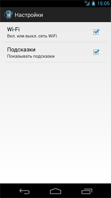
Наверное, вы обратили внимание, что метод addPreferencesFromResource() был зачёркнут и помечен, как устаревший (если вы создавали проект для Android 3 и выше). В новых версиях Android следует использовать фрагмент PreferenceFragment, о котором поговорим в другой раз.
Мы научились сохранять настройки при помощи флажков. Существует также возможность сохранения настроек в текстовом виде при помощи EditTextPreference. Подобный способ настройки позволяет сохранять текст, вводимый пользователем. Давайте реализуем эту возможность в нашем текстовом редакторе - добавим возможность устанавливать размер шрифта для текста. Откроем снова файл settings.xml и добавим новый элемент EditTextPreference:
<EditTextPreference
android:key="@string/pref_size"
android:title="Размер шрифта"
android:summary="Устанавливает новый размер шрифта"
android:defaultValue="14"
android:dialogTitle="Введите размер шрифта (от 10 до 32)" />
Запустите проект и вызовите окно настроек. Теперь у нас появилась опция установки размера шрифта с треугольником (для старых версий Android). Если щёлкнуть на треугольнике, то откроется новое диалоговое окно с текстовым полем ввода.
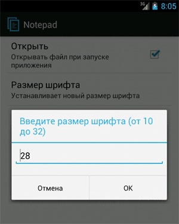
В Android 4 я не увидел никаких треугольников и догадаться, что можно коснуться экрана для вызова другого экрана, практически невозможно. Кто придумал такой интерфейс?
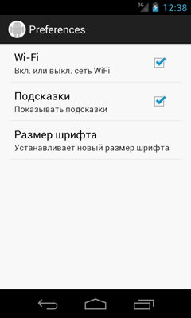 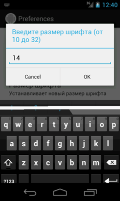
В следующем уроке мы разберём, как считывать установленные значения размера шрифта.
Также можно использовать списки для хранения настроек. Для этой цели используется диалоговое окно ListPreference. Необходимо заранее подготовить строковый ресурс для заголовка и массив строк для самого списка значений. Индекс выбранной строки списка будет задавать нужное значение для сохранения в SharedPreferences.
Продолжим работу с текстовым редактором и добавим в него список для выбора стиля текста. В списке будет четыре опции: Обычный, Полужирный, Курсив, Полужирный+Курсив.
Подготовим массив строк и сохраним его в файле arrays.xml, который необходимо поместить в каталог res/values/.
<?xml version="1.0" encoding="utf-8"?>
<resources>
<string-array name="text_style">
<item>Обычный</item>
<item>Полужирный</item>
<item>Курсив</item>
<item>Полужирный+Курсив</item>
</string-array>
</resources>
В файл настроек (settings.xml) добавим дополнительный элемент <ListPreference>, в котором определим атрибуты заголовка окна, привязку к массиву значений и значение по умолчанию:
<ListPreference
android:key="@string/pref_style"
android:title="Стиль для шрифта"
android:summary="Устанавливает стиль для шрифта"
android:defaultValue="1"
android:entries="@array/text_style"
android:entryValues="@array/text_style"
android:dialogTitle="Выберите стиль для шрифта" />
Код для чтения настроек из списка рассматривается в следующем уроке.
Запустив проект, вы теперь увидите новую настройку Стиль для шрифта, которая открывает диалоговое окно для выбора стиля из списка. Обратите внимание, что в диалоговом окне нет кнопки сохранения, только Отмена. Изменения сохраняются сразу при выборе опции списка.
Для сравнения я оставил скриншоты от старой версии Android 2.3 и Android 4.0
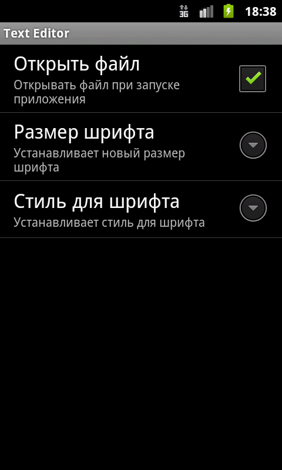 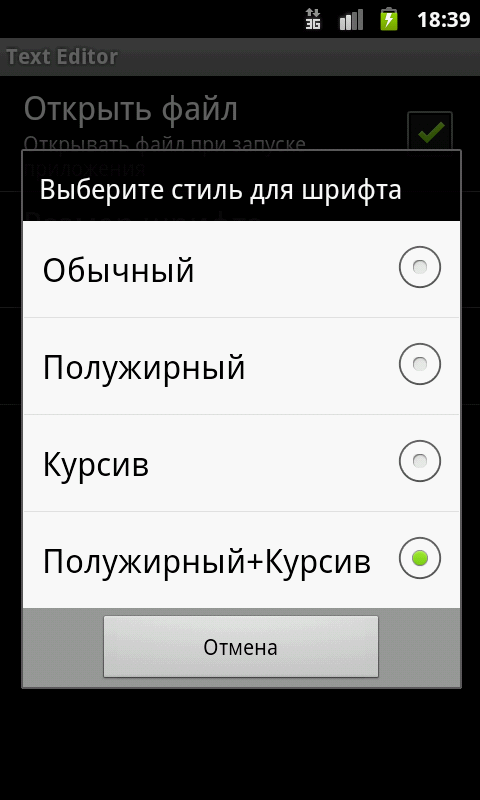
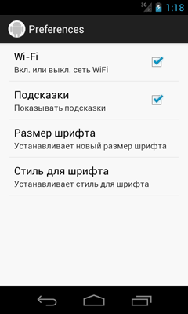 
Поняв общий принцип, вы можете сами разобраться с другими элементами настроек. Рассмотрим ещё один элемент - SwitchPreference, который является заменой для CheckBoxPreference и позволяет включать или выключать настройку.
<?xml version="1.0" encoding="utf-8"?>
<PreferenceScreen xmlns:android="http://schemas.android.com/apk/res/android"
xmlns:custom="http://schemas.android.com/apk/res-auto" >
<CheckBoxPreference
android:defaultValue="true"
android:key="wifi"
android:summary="@string/wifi_summary"
android:title="@string/wifi_title" />
<CheckBoxPreference
android:defaultValue="true"
android:key="hints"
android:summary="@string/hints_summary"
android:title="@string/hints_title" />
<SwitchPreference
android:key="glad"
android:summaryOff="Вы уверены, что не будете гладить кота?"
android:summaryOn="Гладить кота?"
android:switchTextOff="Нет"
android:switchTextOn="Да" />
</PreferenceScreen>
Обратите внимание, что редактировать данные удобнее через вкладку Structure, где вы можете добавлять новые элементы и присваивать им нужные свойства.
В результате получим:
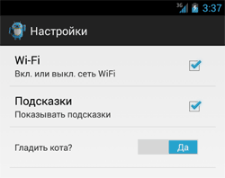
Рассмотрим работу с настройкой, связанной с установкой мелодии для звонка. Предпочтение <RingtonePreference> предоставляет диалоговое окно выбора мелодии звонка со списком опций. Список в диалоговом окне отображает мелодии для звонка, уведомлений, тонового набора, доступные на мобильном устройстве. Также предусмотрена возможность добавления дополнительной опции Silent (Тихий режим) - добавьте атрибут android:showSilent="true".
Создадим файл настроек preferences.xml:
<?xml version="1.0" encoding="utf-8"?>
<PreferenceScreen
xmlns:android="http://schemas.android.com/apk/res/android">
<RingtonePreference
android:key="@string/setting_ringtone"
android:title="@string/setting_ringtone"
android:showDefault="true"
android:showSilent="true"
android:summary="Устанавливает мелодию для звонка (вкл. или выкл.)" />
</PreferenceScreen>
Код для запуска окна настроек
Intent intent = new Intent();
intent.setClass(this, Prefs.class);
startActivity(intent);
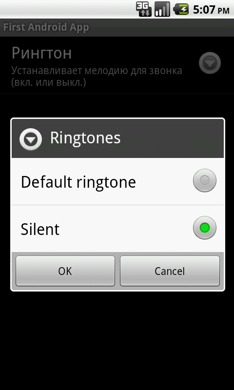
Если в приложении используется слишком много настроек разного типа, то можно сгруппировать их по категориям, чтобы улучшить внешний вид окна настроек. Для этого в Preferences Framework есть специальный элемент PreferenceCategory.
Еще раз вернёмся к статье Создание простого текстового редактора, где использовались настройки для открытия файла и для работы с текстом (Размер шрифта и стиль шрифта). Почему бы нам не разбить настройки на две категории: к первой категории мы отнесем настройку открытия файла, а ко второй две настройки, связанные с шрифтами.
Категории добавляются через элемент <PreferenceCategory> под корневым элементом <PreferenceScreen>, и в него уже помещаются нужные настройки:
<?xml version="1.0" encoding="utf-8"?>
<PreferenceScreen
xmlns:android="http://schemas.android.com/apk/res/android">
<PreferenceCategory
android:title="Работа с файлами">
<CheckBoxPreference
android:key="@string/pref_openmode"
android:title="Открыть файл"
android:summary="Открывать файл при запуске приложения" />
</PreferenceCategory>
<PreferenceCategory
android:title="Настройки шрифта">
<EditTextPreference
android:key="@string/pref_size"
android:title="Размер шрифта"
android:summary="Устанавливает новый размер шрифта"
android:defaultValue="14"
android:dialogTitle="Введите размер шрифта (от 10 до 32)" />
<ListPreference
android:key="@string/pref_style"
android:title="Стиль для шрифта"
android:summary="Устанавливает стиль для шрифта"
android:defaultValue="1"
android:entries="@array/text_style"
android:entryValues="@array/text_style"
android:dialogTitle="Выберите стиль для шрифта" />
</PreferenceCategory>
</PreferenceScreen>
Если вы запустите приложение для текстового редактора с добавленными категориями, то увидите дополнительную полоску с текстом. Сравните два рисунка до и после добавления элемента PreferenceCategory:
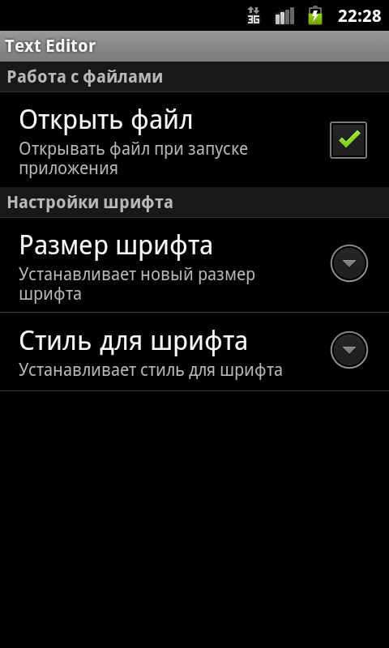
Кроме корневого элемента <PreferenceScreen> в файле настроек можно использовать вложенные дочерние элементы <PreferenceScreen>, которые будут отображаться в отдельном окне. Родительский экран <PreferenceScreen> в этом случае будет отображать вход для запуска дочернего экрана настроек. Продолжим опыты над текстовым редактором и добавим еще одну настройку, управляющую цветом (выделено жирным).
<?xml version="1.0" encoding="utf-8"?>
<PreferenceScreen
xmlns:android="http://schemas.android.com/apk/res/android">
<PreferenceCategory
android:title="Работа с файлами">
<CheckBoxPreference
android:key="@string/pref_openmode"
android:title="Открыть файл"
android:summary="Открывать файл при запуске приложения" />
</PreferenceCategory>
<PreferenceCategory
android:title="Настройки шрифта">
<EditTextPreference
android:key="@string/pref_size"
android:title="Размер шрифта"
android:summary="Устанавливает новый размер шрифта"
android:defaultValue="14"
android:dialogTitle="Введите размер шрифта (от 10 до 32)" />
<ListPreference
android:key="@string/pref_style"
android:title="Стиль для шрифта"
android:summary="Устанавливает стиль для шрифта"
android:defaultValue="1"
android:entries="@array/text_style"
android:entryValues="@array/text_style"
android:dialogTitle="Выберите стиль для шрифта" />
<PreferenceScreen
android:key="@string/pref_color"
android:title="Цвет текста"
android:summary="Устанавливает цвет для текста">
<CheckBoxPreference
android:key="@string/pref_color_black"
android:title="Черный"
android:defaultValue="true"
android:summary="Устанавливает черный цвет" />
<CheckBoxPreference
android:key="@string/pref_color_red"
android:title="Красный"
android:summary="Устанавливает красный цвет" />
<CheckBoxPreference
android:key="@string/pref_color_green"
android:title="Зеленый"
android:summary="Устанавливает зеленый цвет" />
<CheckBoxPreference
android:key="@string/pref_color_blue"
android:title="Синий"
android:summary="Устанавливает синий цвет" />
</PreferenceScreen>
</PreferenceCategory>
</PreferenceScreen>
Запустив приложение, вы увидите новую настройку Цвет текста, которая открывает новое окно для выбора цвета текста.
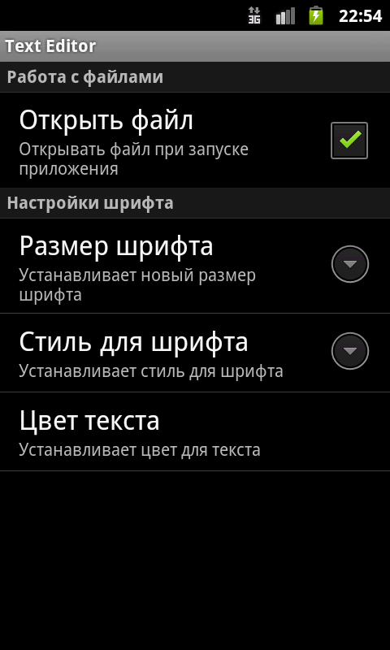 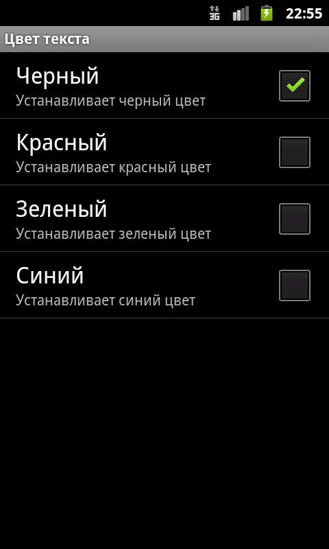
Вам остается только написать код для обработки выбора пользователя, чтобы вывести текст в текстовом редакторе в нужном цвете. Обратите внимание, что в нашем примере используются флажки, которые позволяют создавать комбинации различных цветов. Например, сочетание красного и синего цвета дают красивый цвет, который понравится известному дизайнеру Артемию Лебедеву.
Исходный код для текстового редактора смотрите здесь
У фреймворка настроек есть интересная особенность - можно внедрить в экран настроек вашего приложения вызов системных настроек. Делается это следующим образом. В файл настроек добавляем новых блок, например, такой:
<PreferenceScreen
android:summary="Импортированная системная настройка"
android:title="Настройка через намерение" >
<intent android:action="android.settings.AIRPLANE_MODE_SETTINGS" />
</PreferenceScreen>
Класс android.provider.Settings включает множество констант типа android.settings.*, которые можно использовать для вызова экранов системных настроек. Я выбрал настройку Автономного режима, также можно было вызвать настройку Экрана (android.settings.DISPLAY_SETTINGS). Далее нужно добавить фильтр намерений в запись манифеста:
<activity android:name="Prefs" >
<intent-filter>
<action android:name="ru.alexanderklimov.preferences.ACTION_USER_PREFERENCE" />
</intent-filter>
</activity>
При использовании данного способа система интерпретирует это как запрос на вызов метода startActivity() с указанным действием. Это очень удобно, когда из вашего экрана настроек нужно вызвать стандартную системную настройку.
Иногда требуется, чтобы часть настроек была связана с определённой родительской настройкой. И если родительская настройки заблокирована, то есть смысл автоматически заблокировать и дочерние настройки. Для этой цели применяется атрибут android:dependency.
<?xml version="1.0" encoding="utf-8"?>
<PreferenceScreen xmlns:android="http://schemas.android.com/apk/res/android">
<CheckBoxPreference
android:key="cat_key"
android:title="У вас есть кот?"
android:summary="Доступно для владельцев котов"
android:defaultValue="true" />
<EditTextPreference
android:key="catfood"
android:title="Подарки для кота"
android:summary="Угости кота"
android:dependency="cat_key" />
</PreferenceScreen>
Мы указали, что текстовое поле зависит от родительского флажка. Запустим и сравним поведение в двух разных случаях.
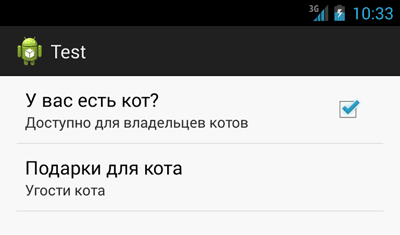
Как уже упоминалось, класс onSharedPreferenceChangeListener позволяет вызвать callback-метод в момент добавления, удаления или изменения конкретной Общей настройки. Используя этот обработчик, компоненты вашего приложения могут следить за изменениями в настройках, установленных пользователем, и обновлять пользовательский интерфейс или корректировать поведение программы.
Зарегистрируйте обработчик onSharedPreferenceChangeListener, применив Общие настройки, за которыми вы хотите следить. Реализация onSharedPreferenceChanged показана ниже (каркас):
public class MyActivity extends Activity implements OnSharedPreferenceChangeListener {
@Override
public void onCreate(Bundle SavedInstanceState) {
// Регистрируем этот OnSharedPreferenceChangeListener
Context context = getApplicationContext();
SharedPreferences prefs =
PreferenceManager.getDefaultSharedPreferences(context);
prefs.registerOnSharedPreferenceChangeListener(this);
}
public void onSharedPreferenceChanged(SharedPreferences prefs, String key) {
// TODO Проверять общие настройки, ключевые параметры и изменять UI
// или поведение приложения, если потребуется.
}
}